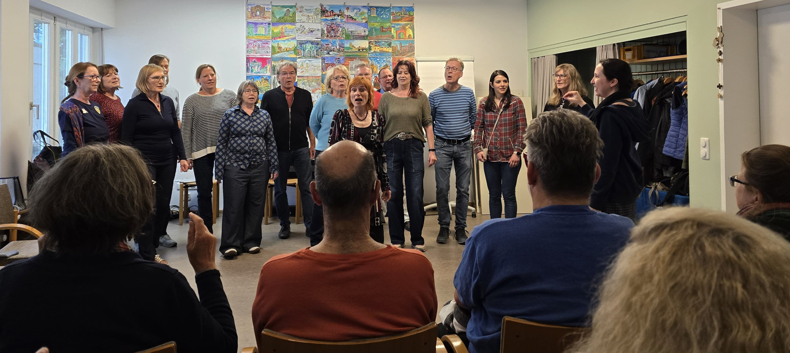

Tja, also, das ist so eine Sache: Wir heißen 'Heart-Chor'... oder vielleicht ja doch eigentlich 'Hardcore', wie manche sagen - wenn man das bloß mal so genau wüsste.
Wie dem auch sei, wir singen A-cappella-Pop in einer kleinen Chor-Besetzung, oder manchmal auch Rock'n'Roll, Rhythm-&-Blues oder Country.
Oder Britpop, oder es rutscht mal ein 20er Jahre Schlager dazwischen... Aber wie soll man das alles so genau beschreiben? Wir singen was uns Vergnügen bereitet und
worauf wir uns einigen können. Meistens haben wir so viele Meinungen wie Chor-Sänger:innen und noch ein paar mehr. Und da bislang noch niemand in die Zukunft sehen kann,
lassen wir uns mal überraschen, wie es weiter geht.
Was man aber ziemlich sicher weiß, ist, dass wir uns Mittwoch Abends in der Nähe des Max-Weber-Platzes in München zur Chorprobe treffen.
Wir haben eine Chorleiterin und einen Chorleiter, die sich abwechseln. Chor-Arrangements machen wir öffter auch selber. Ab und zu gibt es sogar mal einen kleinen Auftritt,
aber das lässt sich noch ausbauen - finden wir.
Hier halten wir Euch auf dem Laufenden, sobald wir einen Auftritt planen ;-).
Vielleicht bist Du ja auf der Suche nach einem Chor, oder Du fühlst Dich spontan angesprochen. Man sollte so was ja nicht ausschließen. Wir sind noch klein und freuen uns daher
über ein paar neue Mitsänger:innen in allen Stimmlagen. Besonders gut können wir Unterstützung bei den Männerstimmen und im Sporan gebrauchen.
Melde Dich gerne für nähere Informationen bei Andrea (Andie) unter dieser E-Mail:
chor@musterchor.de
Darf ich vorstellen: Das sind wir, Hardcore äähh Heart-Chor:

Angaben gemäß § 5 TMG
Heart-Chor
Max Mustermann
Musterstraße 12
12345 Musterstadt
Kontakt:
E-Mail: chor@musterchor.de
Telefon: 01234 / 56789
Verantwortlich für den Inhalt nach § 55 Abs. 2 RStV:
Max Mustermann
Musterstraße 12
12345 Musterstadt
Die Inhalte unserer Seiten wurden mit größter Sorgfalt erstellt. Für die Richtigkeit, Vollständigkeit und Aktualität der Inhalte können wir jedoch keine Gewähr übernehmen.
Alle auf dieser Website veröffentlichten Inhalte (Texte, Bilder, Grafiken, Layout) unterliegen dem Urheberrecht. Eine Vervielfältigung oder Verwendung ist nur mit ausdrücklicher Genehmigung der Chorleitung bzw. des Chores gestattet.
Unsere Website enthält Links zu externen Websites Dritter, auf deren Inhalte wir keinen Einfluss haben. Deshalb können wir für diese fremden Inhalte keine Gewähr übernehmen. Für die Inhalte der verlinkten Seiten ist stets der jeweilige Anbieter oder Betreiber der Seiten verantwortlich.